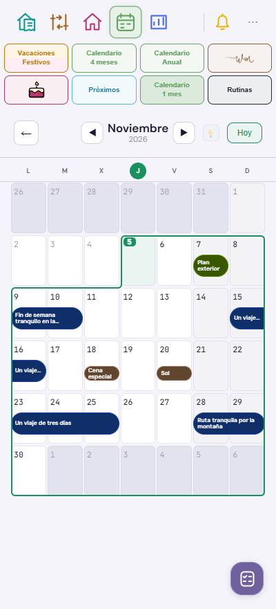
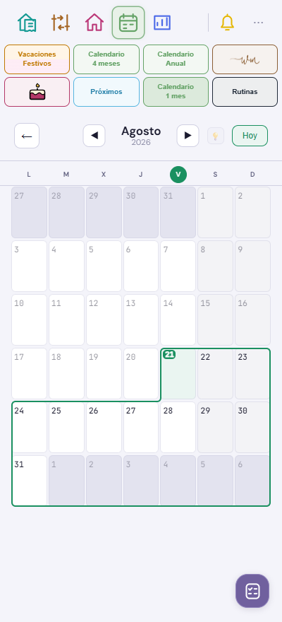

Calendario mensual · v540
Los eventos grandes de uno o dos días dentro de una misma semana pueden mostrar hasta dos líneas. Si el título cabe, conserva una; los eventos de domingo a lunes mantienen sus títulos por semana.
Ajuste v541: las barras finas mantienen una sola línea con puntos suspensivos.
El contorno verde mantiene el recorrido y redondea los dos giros del escalón. Las barras conservan sus cortes de media casilla y su acceso al detalle.
Capturas de la app con datos ficticios. La propuesta de Home continúa separada.
Títulos de uno y dos días, junto a un evento que cruza de domingo a lunes.
Contorno continuo con las esquinas del escalón redondeadas.
Volver a las revisiones · Abrir el mapa